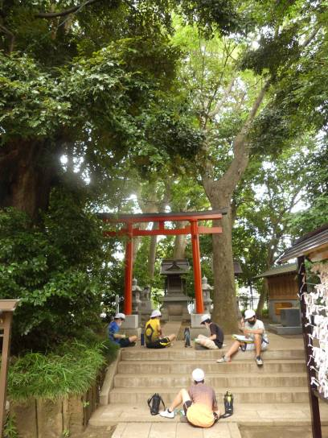

６年生のページ
日課表
６年１組
６年２組
タブレット端末を使った双方向型の外国語科の学習 ９月２・３日・４日


本校では、児童のコミュニケーション能力と英会話の力を伸ばすことを目標に“国際交流会”を開催しています。
県内の外国語学校と連携し様々な国の留学生を１日本校にお招きして、全校の児童と交流します。
児童と留学生が英語で互いに自己紹介したり、興味のあることを質問しあったりして会話に親しむことができ、
本校児童も楽しみにしている学習行事です。
今回は、感染症対策も配慮し６学年発の企画でタブレットと Google Meet を使った双方向通信での交流ができないか考え取り組みました。
タブレットのセッティングなど準備が大変でしたが、９月２日、３日、４日の業間休みと昼休みを利用して計６回、小グループ編制で交流する機会を設けました。
英語で交流することに慣れている本校６年生はすぐに順応し会話を楽しんでいました。
【相手校】 双葉外語学校
所在地： 〒260-0021 千葉市中央区新宿２丁目６-８
電話： 043-244-9081
http://www.futabacollege.com/JP/index.asp
※ 最後の画像は本件とは無関係なリレー選手決めをしているBP教諭と児童の様子です。
学年だより９月号


卒対だよりVol.1についてはこちらをご覧下さい
むしむし大行進
向山小は自然がとてもゆたかなので虫もたくさんいます。
・その１ 昆虫好きな K 君が持ってきた物体 X カブトムシの抜け殻
・その２ 某教頭がグランドで見つけた ゴマダラカミキリ
・その３ 昆虫好きな Y 君が捕獲した ナナフシ
・その４ 某教頭が体育館への通路で見つけた コクワガタ
その１を除いては、動物愛護の精神に基づいて向山の森に逃がしました。
クリックすると、向小にいた様々な虫を見ることができます。
虫が苦手な方はクリックしないでください・・。
丹生神社（にうじんじゃ）

現在、６年生は図工の時間に学校を出て線路を越え北上したところにある丹生神社に行き、
境内（けいだい）で写生をしています。谷津の地に丹生神社ができたのは西暦1650年代。
江戸時代の初期に建立（こんりゅう）された歴史ある神社です。
お社（やしろ）は立派なつくりでいろいろなところに細やかな彫り物（彫刻）が施（ほどこ）されています。
見取り枠を使って３から４枚小さな紙に割り箸ペンでスケッチし気に入ったところを決めました。
そのあとは、大きな画用紙に描きます。神社のおごそかな感じや、建物の持つ勢い、周りの樹木などが
美しく描けるといいです。
感謝の意を込めてしっかりあいさつをして帰りました。


{kind=link}
{kind=link}
{kind=link}
{kind=link}
{kind=link}